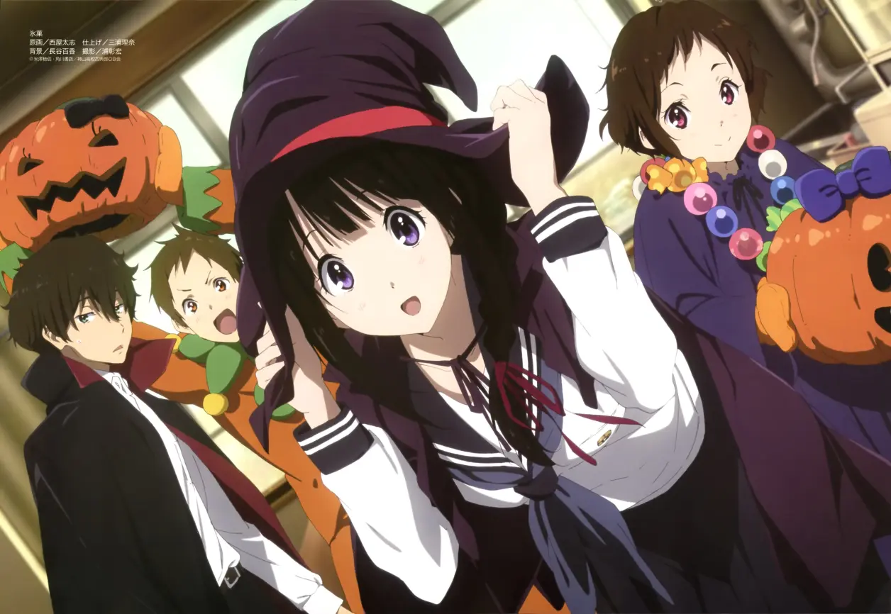
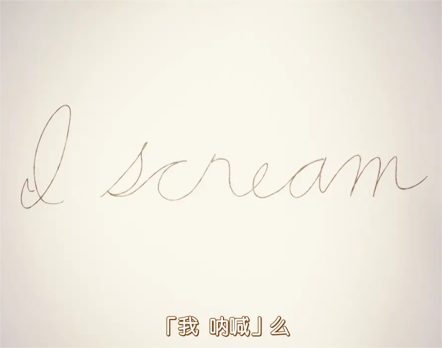

与天才之间，那令人绝望，却又并非遥不可及的距离
讨厌他人使用“期待”一词。毕竟，所谓期待的背后，恰恰是不期待，恰恰是在明确了自己无法做到的刹那，所生成的绝望的“呐喊”；所以，一旦自己说出了“期待”二字，那就相当于自己放弃了对此的执着。
这种被迫放下的过程，这种因为无奈而产生的期待，却是成长过程中的必经之路。所以在那之后，我们看见了那个越发没有胜负欲的少年；他所执着的事物也变得越来越少，甚至直到最后，只剩下了“没有执着”这点可以继续执着下去了。
而所谓成长，或许就是我们的棱角与锐气，被现实给一点点磨平的这个过程。
就是我们所执着的、所热爱的事物，因为我们所产生的一个个期待，给消灭的过程。
同样经历过成长，经历过这一切的我们，自然就会对这种想法与处境，产生极为强烈的共鸣，进而被本作那极其犀利的、极具穿透力的“才能”论述，给折服。
虽然它展现那令人刻骨的无奈与绝望；但它绝不是一面倒的站在这个立场上，它也同时清楚地告诉了我们，即便是所谓的天才，也有他们犯错、自卑、做不好的时刻，他们也是需要我们这些普通人，所具有的其他能力，才能够把一件事做得更好、更完善。
所以，我们确实可以对比我们更厉害的人，抱有敬畏之心；但，我们也无需因此而感到绝望，更无需因此而过度地贬低自己。
我们应去注视的无声呐喊
关谷纯的悲剧不仅仅来源于所谓的“敌人”校方，更来自于将关谷纯推向祭坛的学生方。为什么说是祭坛，因为关谷纯本身就是被当做了祭品。“牺牲”一词尚可理解为为了光荣的事业而舍弃自己，可以读出积极进取的含义。“祭品”一词用在人的身上，却只能感到深深的悲哀和不寒而栗。
最后的真相，直指千反田叔叔当年被迫退学时，借由古典文学部部刊《冰菓》的名字，来发出他那绝望的、却又无人听见的呐喊与悲鸣。
悬疑电影篇章中，被众人所推选出来的编剧学姐的想法，在无法达至众人期待之后，她的畏缩与懦弱，其实也形成了一道无声的悲鸣；虽说入须学姐的介入与折木的方案，拯救了那部电影，但编剧学姐本人心中的苦涩，又有谁能够听见呢？
到了文化祭的十文字事件，之所以犯人要采用这样一个别扭且拐弯抹角的方式，去试探搭档的想法；其实就是因为他无法主动地、清晰地将自己的想法，告知并传达给他的搭档，所以才要使用这样的方式。而这样的一种方式，乃至于这整个篇章中所对于才能的讨论，其实不就是犯人以及其他普通人，面对着自己的“无能”与“自卑”，所发出的无声呐喊吗？
是的，本作中的几乎所有事件，都是事件背后的参与者，对于某件事情的无声呐喊；
而本作几乎所有的推理的目标，就是试图将这道无声的悲鸣，给探究出来。
